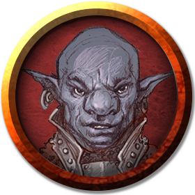

O gnomo das profundezas é um ladino imprudente com uma atitude despreocupada, apaixonado por moedas e obsessão por apostar qualquer coisa em praticamente qualquer situação. No entanto, ele é um homem de palavra e anota todas as dívidas e créditos, que sempre honrava. Jimjar também possui uma habilidade incrível de esconder riquezas significativas em seu corpo.
Jimjar foi exilado por seu povo por causa de sua obsessão por jogos de azar, que outros gnomos das profundezas viam como sinal de loucura do abismo. Embora não faça questão de retornar para sua casa, ele guia os outros se solicitado.
Jimjar foi capturado por elfos negros quando estava saqueando espólios de uma batalha.
Jimjar não se importa de ganhar ou perder uma aposta, o que importa para ele é a satifação da competição. Porém, ele se recusa a perder tantas apostas para Vaal, e gostaria de vencer alguma em algum momento.
Jimjar deseja obter a lâmina que pertence a Buppido, pois ela tem efeitos visuais que o cativam.
Ainda que vencer ou perder seja irrelevante para ele, Jimjar tem em mente que só morrerá satisfeito após vencer uma aposta impossível..
Nos últimos dias, Jimjar chegou a conclusão que seria um excelente rei, então decidiu obter o reinado dos elfos dourados, o reino Nelrindenvane do Príncipe Derendil, através de apostas.
"A sorte sempre me sorri!"
"Ainda não entendi qual a desse tio.. Mas essa faca que ele usa.. Vai ser minha."
"Esse tio é bem forte, aposto que será o único sobrevivente no fim disso tudo."
"Era gente boa. Mas não aceitava apostar o escudo.."
"Era bem apegado à Eldeth. Espero que, agora que ela se foi, o tio aceite apostar esse escudo eventualmente."
"Aposto que ele não vai conseguir voltar a sua forma élfica... Já era, tio!"
"Esse deve valer uma boa aposta de carteado."
"Aposto que ele vai nos trair.. Mas também aposto que não.. Se fosse o fazer, já teria feito."
De toda
forma, caso formos para a Pedra do Massacre do Refúgio, precisaremos nos distanciar dele, lá drows não
são permitidos.
"Aposto que vai ser o próximo a morrer.."
"Esses dois tem algo muito sombrio a esconder.. E eu não sei o que é.."
"Aposto que esse tio vai enlouquecer em breve."